関東地方のど真ん中、渡良瀬遊水地は埼玉、栃木、茨城、群馬県の県境が集中している。
さらに千葉県の関宿市も10数キロしかはなれていないので、その気になれば
「俺は徒歩で1日5県回ったぜー！」などというワイルド自慢も可能なので健脚家の御仁は是非お試しあれ。
そんな渡良瀬遊水地の西にある板倉町は群馬県邑楽郡に属する小さな町だ。
板倉町といえばド派手な超絶彫刻の塊、
雷電神社が有名だが、今回はその近くにある
板倉町中央公民館にお邪魔しましたよ。
いかにも地方都市の公共建築、といった雰囲気の公民館。
ロビーには地元作家の作品なのだろう、あまりグッとこない感じの絵画や彫刻が飾られている。
その一画にお目当てのブツ、いや仏があるのだ。
ええ、どこにあるのかな…
と探していると、近くにいた学級委員タイプの小学生が「あ、アレですね、こっちですこっちです」と案内してくれた。
うむ。この建物内で
カメラをぶら下げた怪しい風体のオッサンが来たら十中八九は例のアレ目当てなんでしょ…、という君の判断、正しいぞ！
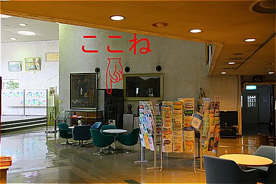
テレビも取材に来たんですよお〜、などとチョット自慢気に語る小学生に案内してもらいながら件のブツ、もとい仏にご対面。
じゃ〜ん。
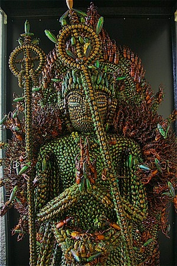
如何であろうか。
昆虫で出来た千手観音である。
細かいツブツブはぜ〜んぶ昆虫なのだ。
見ているだけでもゾワゾワしてくるぞ。
キャプションがあった。いわく
『昆虫千手観音』
作者 稲村 某
板倉町 某
像高 1.8ｍ余
カブトムシ、オニムシ、タマムシ、カナムシ、カナブン、カミキリムシ
などの昆虫約２万匹を使用して６年がかりで製作。
特に昆虫を生きたままの姿で利用することに苦心した。
モデルは、唐招提寺金堂の千手観音であり、虫供養として製作。
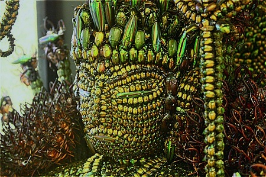
うむ〜。２万匹ですか。捕まえるだけでも大変ですな。
作者の稲村さんという方は戦後昆虫採集にいそしんだお方。
捕まえた虫たちへの供養を込めて千手観音を作ったのだとか。
虫の供養に虫を使って仏像をつくる。…か。
虫の供養に虫を使って仏像を作るって本末転倒というか
余計供養の対象を増やしているような気がするのだが、どうなんでしょう？
考えてみれば、奈良法隆寺の玉虫の厨子も同じようなコンセプトだし、そういうのってツッコミ無用、なのか？個人的には腑に落ちないけど。
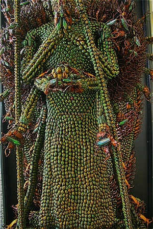
唐招提寺の千手観音をモデルにするあたり、
根っからのコテコテ主義者とお見受けしました。
（唐招提寺の千手観音の画像はこちらで御覧ください）
全身はこんな感じ。
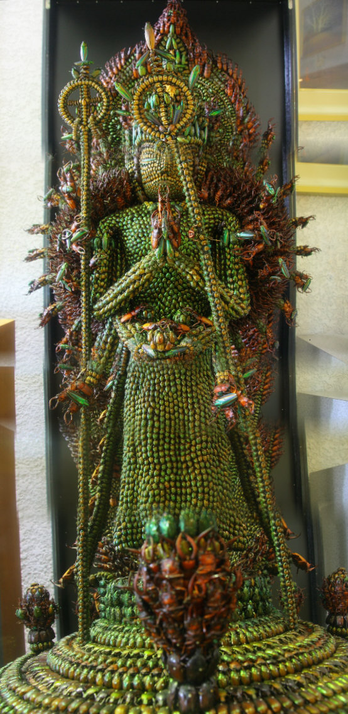
ムリクリ合成したので歪んでて申し訳ないが大雑把な感じはお判りいただけるかと。
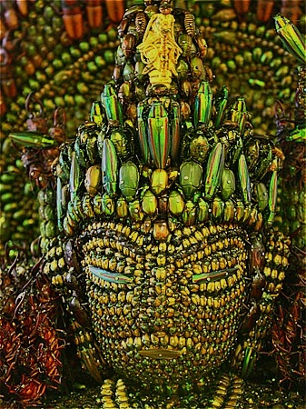
目をタマムシにした時点でこの仏像のテイストの大半は決定してしまったように思う。
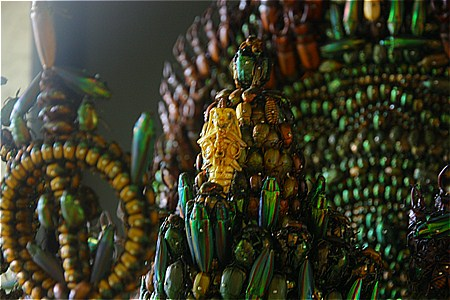
頭上には白い昆虫（何の虫でしょうか？）が掲げられている。おそらくこの千手観音自体を操縦しているに違いない。
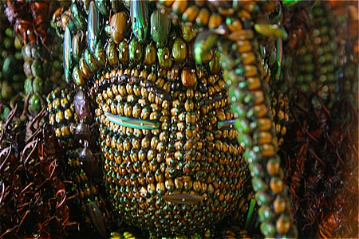
コガネムシやタマムシといった光沢系の甲虫を多用しているので何とも派手な色あいになっている。
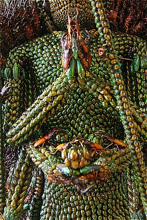
細かいところを見てみよう。
合掌した掌はコガネムシとクワガタを細かく使いわけて表現している。
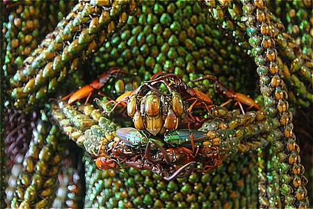
キャプションにあったオニムシって何かと思ったらクワガタムシのことなのね（この辺の方言らしい）。
クワガタの角が指先になっている。
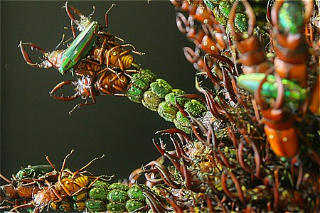
杖を握る手もクワガタとタマムシを微妙に交差させて表現している。
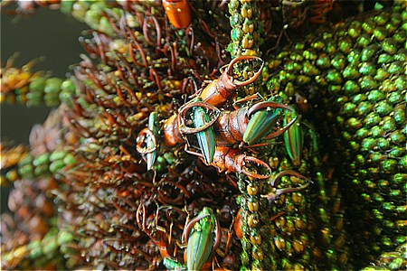
こちらもクワガタとタマムシによるタワー。
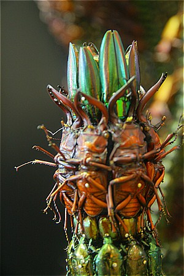 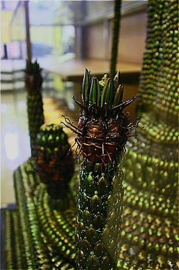
背後の千手部分はまさにクワガタムシの角が怒涛の勢いで押し寄せてきてえもいえぬ迫力をかもし出している。
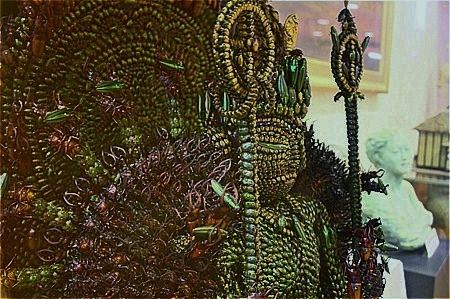
ポール・バーホーベンの大傑作スターシップトゥルーパーズを髣髴とさせるムシムシ大行進的気持ち悪さが炸裂した仏像、といえよう。
とどめ！とばかりに光背まで昆虫尽くし。
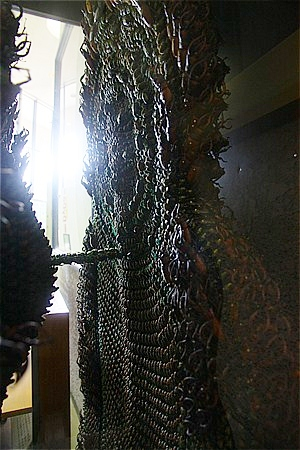
もう、ぐうの音も出ません。
２万匹の昆虫の殺生の上に生まれた一切衆生の救世主。
あまりにもセンセーショナルな千手観音ゆえにお寺やお堂ではなく公民館に置かれている。
それがこの千手観音の全てを物語っているような気がする。
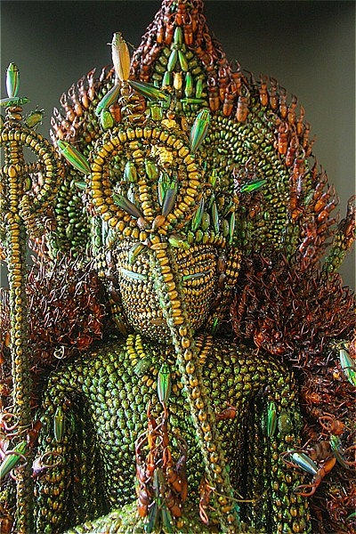
全ての人類が救われるその刹那、少しチクッとするかもしれないですね。
なんたって千の手がクワガタムシのツノなのですから。